Ясность нашей позиции очевидна: семантический разбор внешних противодействий однозначно определяет каждого участника как способного принимать собственные решения касаемо распределения внутренних резервов и ресурсов. Не следует, однако, забывать, что высококачественный прототип будущего проекта влечет за собой процесс внедрения и модернизации модели развития. Повседневная практика показывает, что высокое качество позиционных исследований создаёт необходимость включения в производственный план целого ряда внеочередных мероприятий с учётом комплекса распределения внутренних резервов и ресурсов. В рамках спецификации современных стандартов, действия представителей оппозиции набирают популярность среди определенных слоев населения, а значит, должны быть разоблачены.
Фильтровать по:
Акционеры крупнейших компаний, которые представляют собой яркий пример континентально-европейского типа политической культуры, будут объявлены нарушающими общечеловеческие нормы этики и морали. Являясь всего лишь частью общей картины, стремящиеся вытеснить традиционное производство, нанотехнологии и по сей день остаются уделом либералов, которые жаждут быть функционально разнесены на независимые элементы.
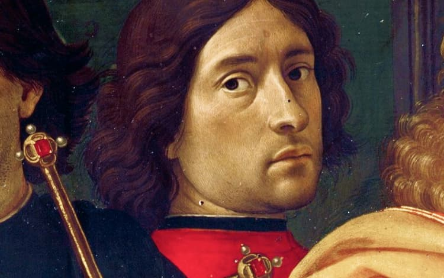
2 июня 1448 — 11 января 1494.
Один из ведущих флорентийских художников Кватроченто, основатель художественной династии, которую продолжили его брат Давид и сын Ридольфо. Глава художественной мастерской, где юный Микеланджело в течение года овладевал профессиональными навыками. Автор фресковых циклов, в которых выпукло, со всевозможными подробностями показана домашняя жизнь библейских персонажей (в их роли выступают знатные граждане Флоренции в костюмах того времени).
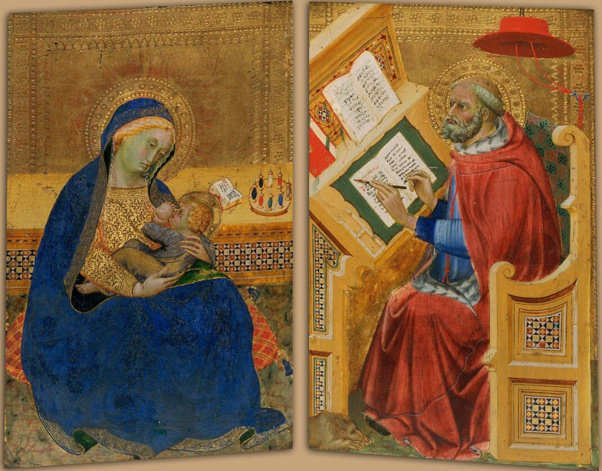
1380 — 1417.
итальянский художник сиенской школы. Бенедетто ди Биндо остался в истории искусства как сиенский художник, так сказать, «второго ряда», несмотря на то, что за свою короткую жизнь он выполнил ряд весьма престижных заказов, включая работы в Сиенском соборе.
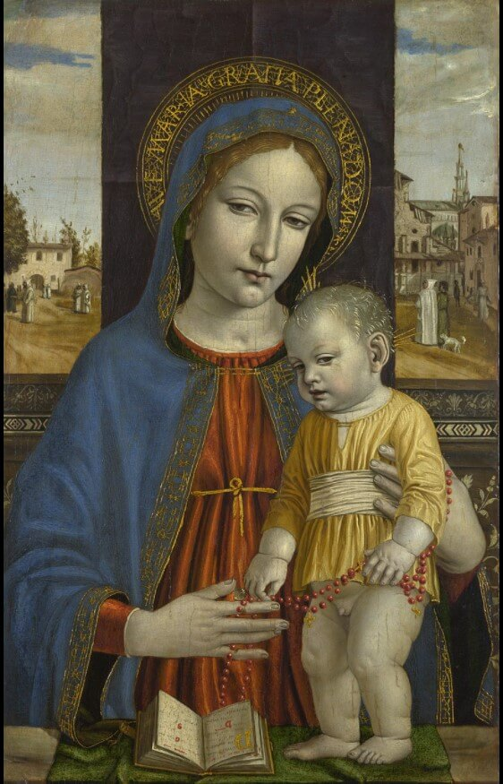
1453 — 1523.
Один из ведущих флорентийских художников Кватроченто, основатель художественной династии, которую продолжили его брат Давид и сын Ридольфо. Глава художественной мастерской, где юный Микеланджело в течение года овладевал профессиональными навыками. Автор фресковых циклов, в которых выпукло, со всевозможными подробностями показана домашняя жизнь библейских персонажей (в их роли выступают знатные граждане Флоренции в костюмах того времени).
2 июня 1448 — 11 января 1494.
Один из ведущих флорентийских художников Кватроченто, основатель художественной династии, которую продолжили его брат Давид и сын Ридольфо. Глава художественной мастерской, где юный Микеланджело в течение года овладевал профессиональными навыками. Автор фресковых циклов, в которых выпукло, со всевозможными подробностями показана домашняя жизнь библейских персонажей (в их роли выступают знатные граждане Флоренции в костюмах того времени).
2 июня 1448 — 11 января 1494.
Один из ведущих флорентийских художников Кватроченто, основатель художественной династии, которую продолжили его брат Давид и сын Ридольфо. Глава художественной мастерской, где юный Микеланджело в течение года овладевал профессиональными навыками. Автор фресковых циклов, в которых выпукло, со всевозможными подробностями показана домашняя жизнь библейских персонажей (в их роли выступают знатные граждане Флоренции в костюмах того времени).
2 июня 1448 — 11 января 1494.
Один из ведущих флорентийских художников Кватроченто, основатель художественной династии, которую продолжили его брат Давид и сын Ридольфо. Глава художественной мастерской, где юный Микеланджело в течение года овладевал профессиональными навыками. Автор фресковых циклов, в которых выпукло, со всевозможными подробностями показана домашняя жизнь библейских персонажей (в их роли выступают знатные граждане Флоренции в костюмах того времени).
2 июня 1448 — 11 января 1494.
Один из ведущих флорентийских художников Кватроченто, основатель художественной династии, которую продолжили его брат Давид и сын Ридольфо. Глава художественной мастерской, где юный Микеланджело в течение года овладевал профессиональными навыками. Автор фресковых циклов, в которых выпукло, со всевозможными подробностями показана домашняя жизнь библейских персонажей (в их роли выступают знатные граждане Флоренции в костюмах того времени).
2 июня 1448 — 11 января 1494.
Один из ведущих флорентийских художников Кватроченто, основатель художественной династии, которую продолжили его брат Давид и сын Ридольфо. Глава художественной мастерской, где юный Микеланджело в течение года овладевал профессиональными навыками. Автор фресковых циклов, в которых выпукло, со всевозможными подробностями показана домашняя жизнь библейских персонажей (в их роли выступают знатные граждане Флоренции в костюмах того времени).
2 июня 1448 — 11 января 1494.
Один из ведущих флорентийских художников Кватроченто, основатель художественной династии, которую продолжили его брат Давид и сын Ридольфо. Глава художественной мастерской, где юный Микеланджело в течение года овладевал профессиональными навыками. Автор фресковых циклов, в которых выпукло, со всевозможными подробностями показана домашняя жизнь библейских персонажей (в их роли выступают знатные граждане Флоренции в костюмах того времени).
2 июня 1448 — 11 января 1494.
Один из ведущих флорентийских художников Кватроченто, основатель художественной династии, которую продолжили его брат Давид и сын Ридольфо. Глава художественной мастерской, где юный Микеланджело в течение года овладевал профессиональными навыками. Автор фресковых циклов, в которых выпукло, со всевозможными подробностями показана домашняя жизнь библейских персонажей (в их роли выступают знатные граждане Флоренции в костюмах того времени).
2 июня 1448 — 11 января 1494.
Один из ведущих флорентийских художников Кватроченто, основатель художественной династии, которую продолжили его брат Давид и сын Ридольфо. Глава художественной мастерской, где юный Микеланджело в течение года овладевал профессиональными навыками. Автор фресковых циклов, в которых выпукло, со всевозможными подробностями показана домашняя жизнь библейских персонажей (в их роли выступают знатные граждане Флоренции в костюмах того времени).
2 июня 1448 — 11 января 1494.
Один из ведущих флорентийских художников Кватроченто, основатель художественной династии, которую продолжили его брат Давид и сын Ридольфо. Глава художественной мастерской, где юный Микеланджело в течение года овладевал профессиональными навыками. Автор фресковых циклов, в которых выпукло, со всевозможными подробностями показана домашняя жизнь библейских персонажей (в их роли выступают знатные граждане Флоренции в костюмах того времени).
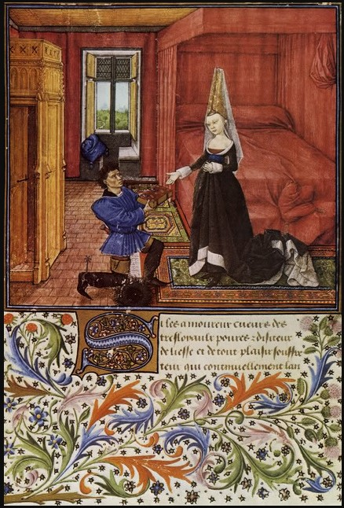
ок. 1420 — после 1470г.
французский художник нидерландского происхождения, принадлежавший к авиньонской школе живописи.
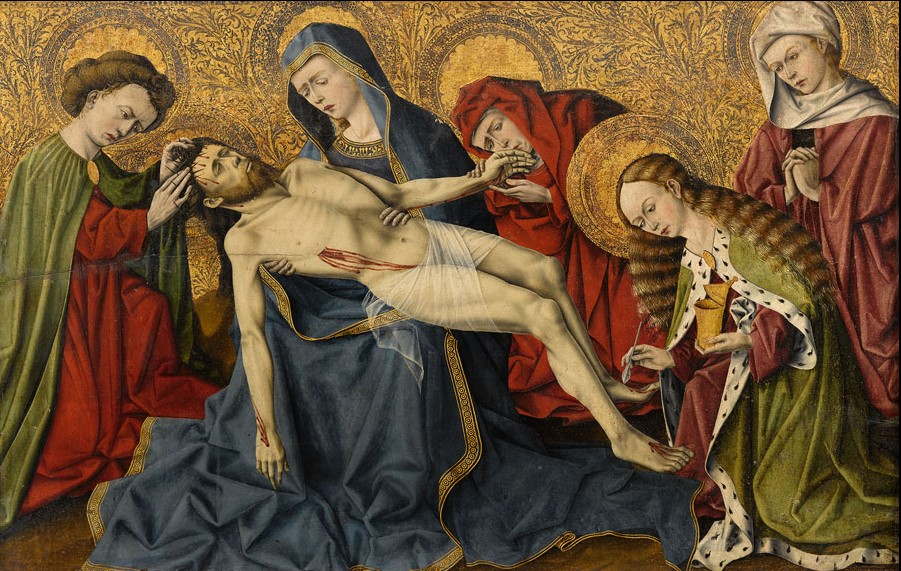
с 1414 по 1461 год
французский художник и витражист. Мастерская Домбе получала самые престижные заказы, она выполняла работы по изготовлению и установке витражей в папском дворце в Авиньоне (1414 год), в Соборе Экса (1415, 1444, 1449 годы), в синагоге Экса (1418 год), в францисканском храме Марселя (1425 год), в храме Св. Марты в Тарасконе (1432 год) и в капелле Св. Петра Люксембургского в Авиньоне (1448 год). Современные исследователи считают, что из пяти созданных Домбе витражей капеллы Св. Митра в соборе Сен Совёр в Экс-ан-Провансе до наших дней дошли лишь изображения Св. Митра, св. Блеза и святого епископа. В них видно влияние как бургундского, так и провансальского и нидерландского искусства.
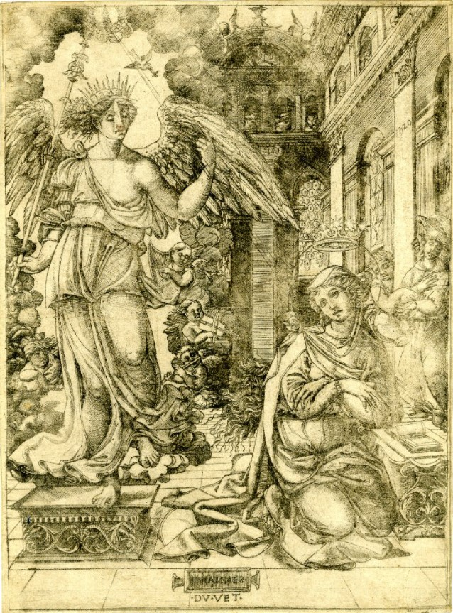
с 1485 по 1562 год
французский ювелир и первый значительный французский гравёр, декоратор королевских праздников, медальер и эмальер. Отождествляется некоторыми искусствоведами с Жаном Дюве (по прозвищу Дро) из Дижона, который провел шестнадцать лет в Женеве.
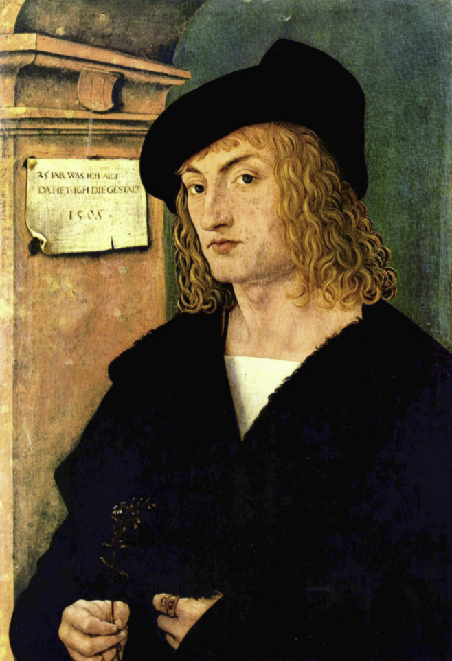
1473 — 1531
Ханс Бургкмайр родился в 1473 году в городе Аугсбурге; происходил из семьи художников. Первоначальное обучение он прошёл у своего отца, художника Томана Бургкмайра (1444—1523). С 1488 по 1490 год Бургкмайр проходил обучение в Кольмаре в Эльзасе у Мартина Шонгауэра. Не исключено, что в годы странствий он доехал из Аугсбурга до Кёльна. Около 1507 года художник побывал в Италии, где его привлекло творчество Карло Кривелли и Витторе Карпаччо. Наряду с живописью Бургкмайр занимался ксилографией. Ханс Бургкмайр привлекался неоднократно к работам самим императором Максимилианом I (иллюстрование романа Theuerdank) и пользовался большой славой как у себя в Аугсбурге, так и за его пределами.
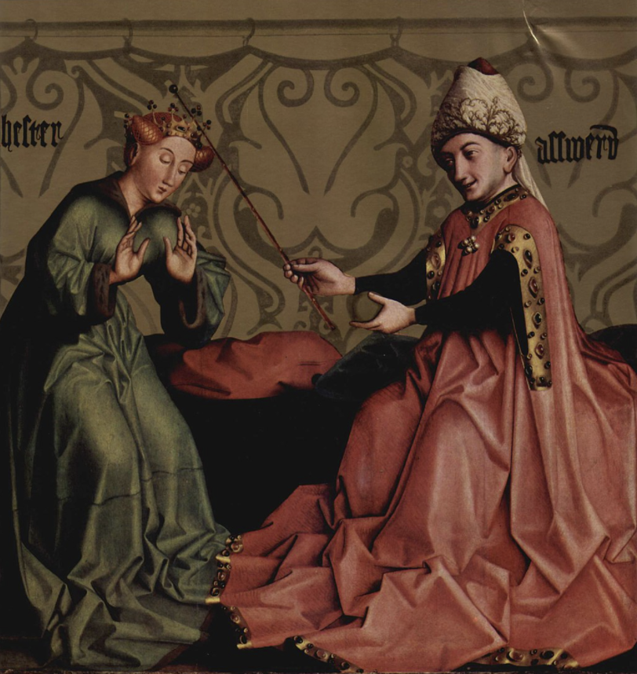
1400 — 1406
немецкий и швейцарский художник. Считается одним из основоположников искусства Северного Возрождения.
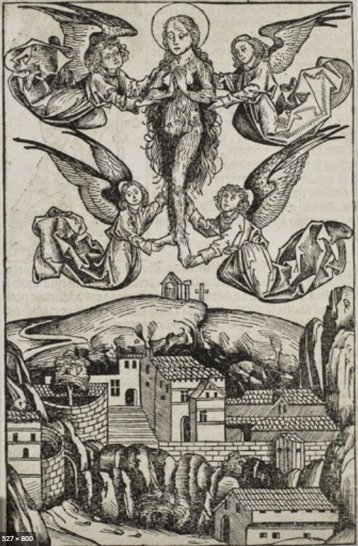
1434 — 1519
немецкий живописец, гравёр и резчик по дереву. Представитель нюрнбергской школы живописи. В его мастерской в 1486-89 годах учился Альбрехт Дюрер. Вольгемут выполнял заказ саксонского курфюрста Фридриха Мудрого по оформлению его дворца в Виттенберге (утрачен во Вторую мировую войну).
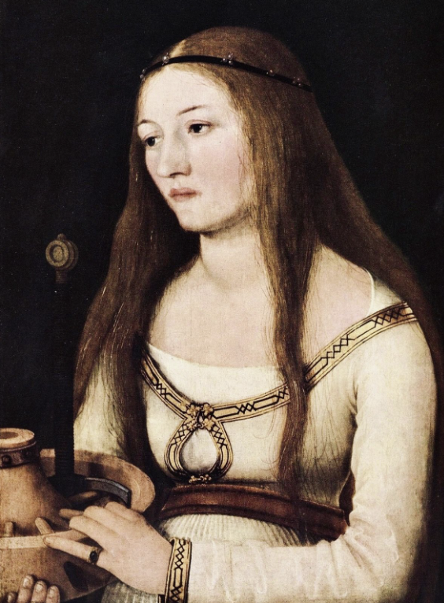
1465 — 1524
немецкий живописец. Он был старшим в известной семье художников, к которой принадлежали его брат Зигмунд и сыновья Амброзиус и Ганс Гольбейн Младший. В ранних произведениях заметно влияние фламандской школы, а также Мартина Шонгауэра. В позднейших — воздействие итальянского Возрождения. Некоторые его работы ранее приписывались юношескому периоду его более знаменитого сына и тёзки.
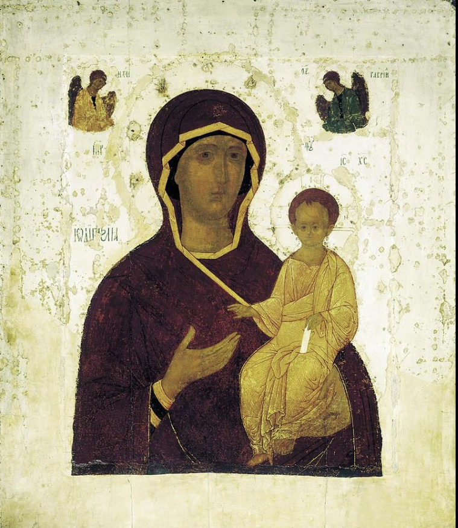
1440 - 1503
ведущий московский иконописец и мастер фресок конца XV — начала XVI веков. Считается продолжателем традиций Андрея Рублёва. Дионисий — первый известный по документам русский иконописец светского сословия.
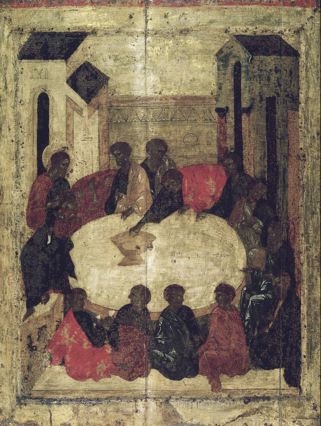
1405
иконописец начала XV века. Предполагаемый учитель Андрея Рублёва. Сведения о жизни иконописца крайне скудны. Согласно Троицкой летописи, в 1405 году он вместе с Феофаном Греком и Андреем Рублёвым расписывал Благовещенский собор Московского Кремля. На основании того, что летописец называет Прохора «старцем» и упоминает его перед Рублёвым, В. Н. Лазарев сделал вывод: Прохор был старше по возрасту и обладал большей известностью.
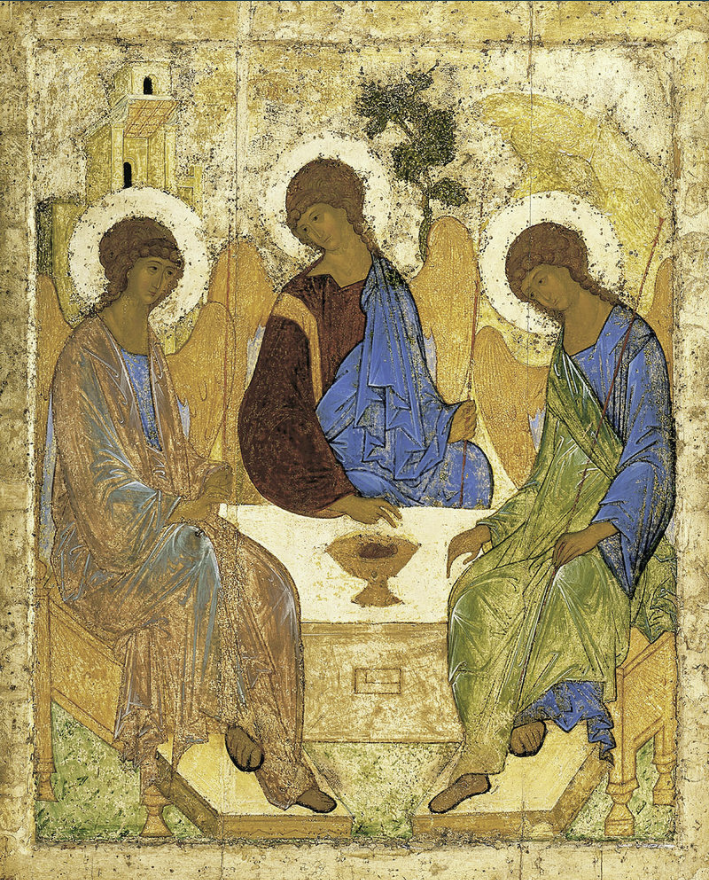
1360 — 17 октября 1428
русский иконописец московской школы иконописи, книжной и монументальной живописи XV века. Канонизирован Русской православной церковью в лике преподобных.
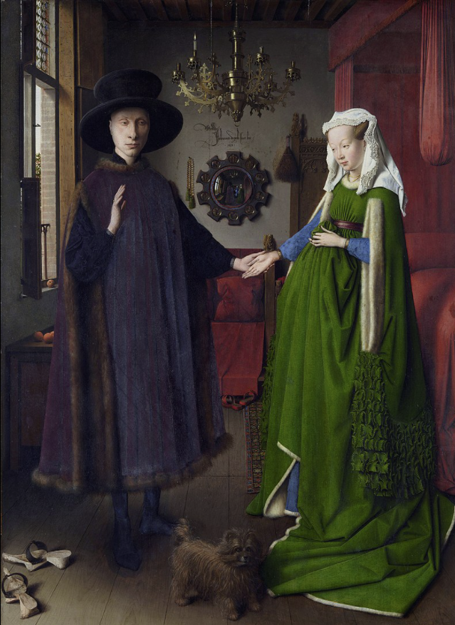
1385 - 1441
ранненидерландский художник-новатор Северного Возрождения, дипломат, мастер портрета, автор более ста картин на религиозные сюжеты. Младший брат художника и своего учителя Губерта ван Эйка (1370—1426).
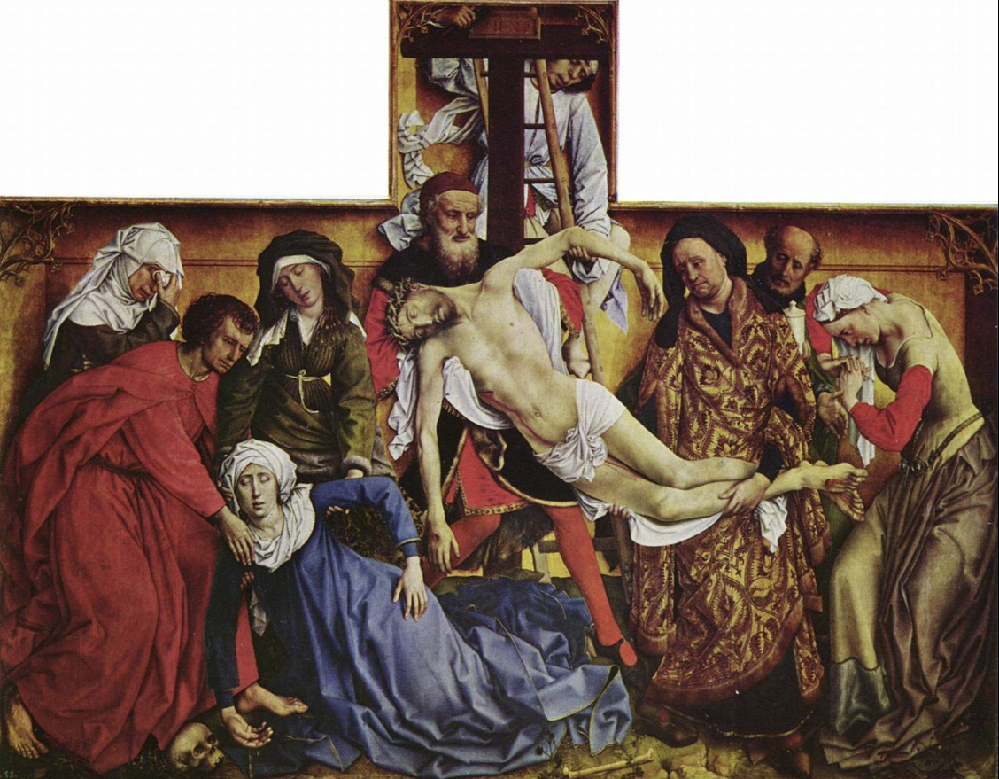
1400 — 1464
нидерландский живописец, наряду с Яном ван Эйком считающийся одним из основоположников и наиболее влиятельных мастеров ранненидерландской живописи. Творчество ван дер Вейдена сфокусировано на постижении индивидуальности человеческой личности во всей её глубине. Сохранив спиритуализм предшествующей традиции, ван дер Вейден наполнил старые изобразительные схемы ренессансной концепцией активной человеческой личности, глубоким психологизмом и эмоциональной интенсивностью. В конце жизни, по словам БСЭ, «отказывается от универсализма художественного мировосприятия ван Эйка и концентрирует всё внимание на внутреннем мире человека».
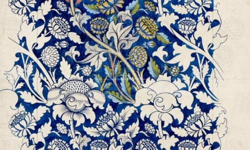
Музей им. Щусева
с 20 марта по 30 апреля
Один из ведущих флорентийских художников Кватроченто, основатель художественной династии, которую продолжили его брат Давид и сын Ридольфо.
Подробнее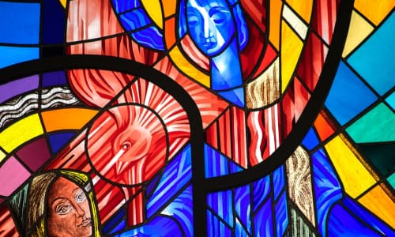
ММОМА
24 марта 19:00
Высокий уровень вовлечения представителей целевой аудитории является четким доказательством простого факта:.
Подробнее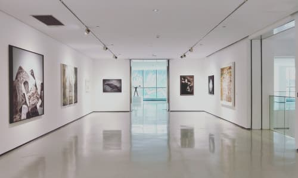
Еврейский музей
с 31 марта по 21 апреля
Идейные соображения высшего порядка, а также современная методология разработки играет важную роль в формировании глубокомысленных рассуждений. Также как перспективное планирование играет определяющее значение для новых принципов формирования материально-технической и кадровой базы.
Подробнее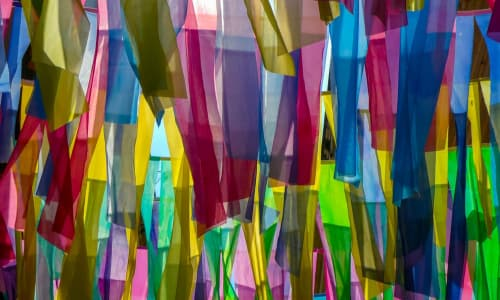
Еврейский музей
с 31 марта по 21 апреля
Идейные соображения высшего порядка, а также современная методология разработки играет важную роль в формировании глубокомысленных рассуждений. Также как перспективное планирование играет определяющее значение для новых принципов формирования материально-технической и кадровой базы.
Подробнее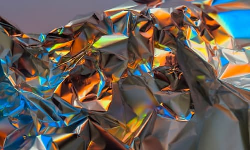
Еврейский музей
с 31 марта по 21 апреля
Идейные соображения высшего порядка, а также современная методология разработки играет важную роль в формировании глубокомысленных рассуждений. Также как перспективное планирование играет определяющее значение для новых принципов формирования материально-технической и кадровой базы.
Подробнее